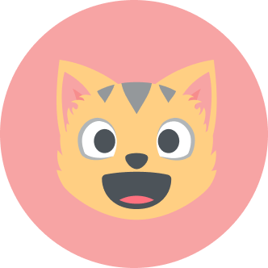
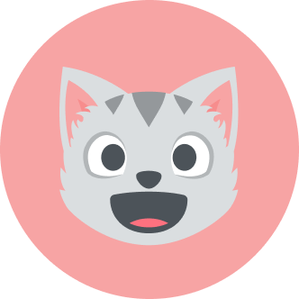
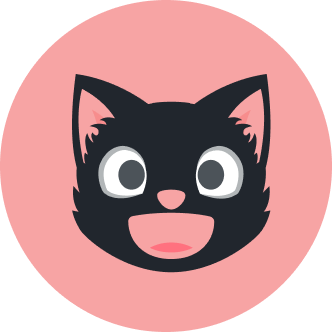
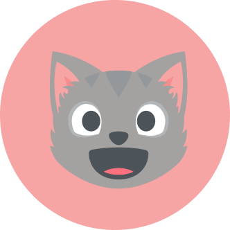
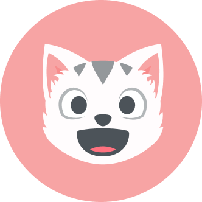

At Purrfect Vibes, we’re dedicated to creating a pawsitive impact for cat lovers everywhere. By combining creative innovation with heartfelt passion, we deliver engaging and community-focused solutions for feline enthusiasts, empowering them to enhance the well-being of their furry companions.
Our mission is rooted in three essential goals: connecting with cat lovers, helping them nurture stronger bonds with their pets, and fostering a supportive, interactive community. Through our content, interactive features, and tailored recommendations, we provide a one-of-a-kind experience that’s as unique as every whisker.
Central to our approach is the user experience – creative spaces that are intuitive, inviting, and enriching for our audience. By delivering valuable insights, fostering emotional connections, and making interactions simple, we aim to be the ultimate destination for all things cat-related.
Our expertise in strategy, content creative, and design enables us to craft solutions that are fun, educational, and impactful, strengthening our role as a trusted resource in the pet care space.
With the loyalty and engagement of our community, Purrfect Vibes creates opportunities to inspire, educate, and delight cat lovers around the globe. This approach has already helped countless pet parents deepen their understanding and appreciation of feline care while building an ever-growing, engaged community.
| Photo | Name | Title | Bio |
|---|---|---|---|
|  | Agnes | Feline Nutrition Specialist | Agnes brings a wealth of expertise in feline dietary health, helping cat owners make informed decisions about their pets’ nutrition. From crafting guides on balanced diets to highlighting the best treats, she ensure every feline fan has the tools to keep their cats healthy and happy. |
|  | Damon | Director of Feline Enrichment | Damon leads the way in creating engaging and enriching content for both cats and their humans. He spearheads interactive features like quizzes, product reviews, and playtime tips, ensuring our audience can build meaningful connections with their furry friends. |
|  | Herbert | Chief Wellness Officer | Herbert oversees all things related to feline health and well-being. From behavior guides to wellness tips, his focus is on empowering cat parents with resources to provide the best care for their companions. |
|  | Mike | Vice President of Cat Content | Mike is the driving force behind Purrfect Vibes’ engaging blog posts, memes, and educational articles. His creative direction ensures our platform strikes the perfect balance of entertainment and information, keeping our audience coming back for more. |
|  | Ferris | Founder and CEO | Ferris founded Purrfect Vibes with a vision to bring together a community of cat lovers. As a lifelong feline enthusiast, Ferris is dedicated to providing a platform that educates, entertains, and inspires. Under Ferris’s leadership, Purrfect Vibes continues to grow as the ultimate destination for all things cat-related. |